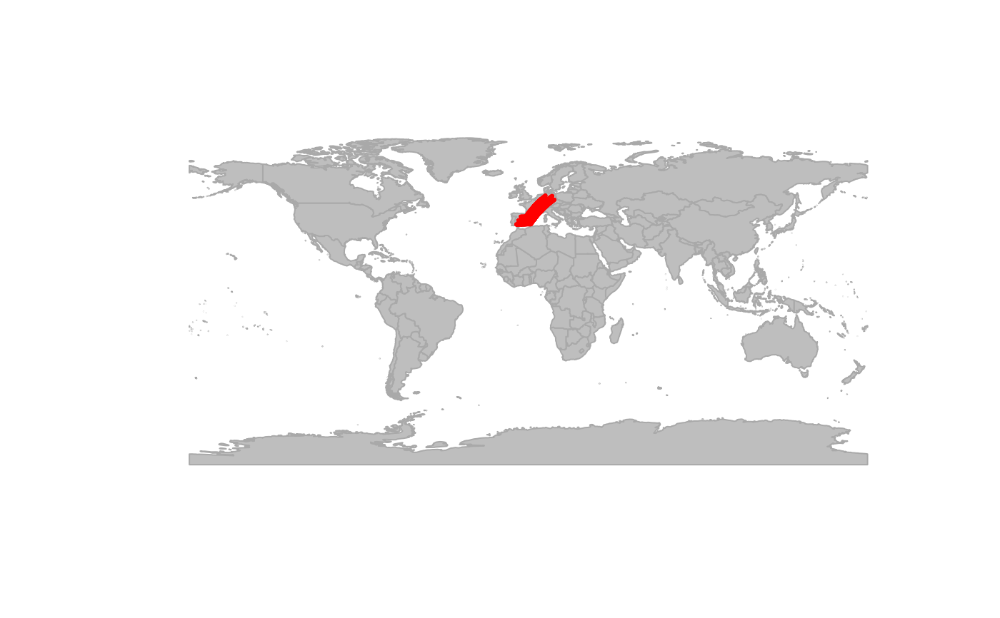

This function computes least-cost path distances between all nodes
belonging to two polygons in a gData or gGraph using dijkstraBetween.
The polygons are specified via a node attribute layer. Optionally, only outline
nodes (nodes with at least one neighbor outside the polygon) are used to
reduce computation time.
Arguments
- g
- layer
Character. Name of the node attribute layer containing polygon membership.
- from
Character. Name of the first polygon.
- to
Character. Name of the second polygon.
- outline
Logical. If
TRUE, only outline nodes of each polygon (nodes with at least one neighbor outside the polygon) are used. Defaults toTRUE.
Details
The function extracts all nodes belonging to the two specified polygons and
computes least-cost paths between them using dijkstraBetween.
If outline = TRUE, the computation is restricted to outline nodes of
each polygon, which can substantially reduce runtime for large polygons.
Examples
world.countries <- rnaturalearth::ne_countries(
scale = "medium",
returnclass = "sf"
)
newGraph <- assignByPolygon(rawgraph.10k,
layer = world.countries,
attr = c("continent", "name")
)
#> Spherical geometry (s2) switched off
#> although coordinates are longitude/latitude, st_intersects assumes that they
#> are planar
#> Spherical geometry (s2) switched on
test <- polygonBetween(newGraph, layer = "name", "Spain", "Germany", outline = TRUE)
plot(newGraph, col = NA, reset = TRUE)
#> Spherical geometry (s2) switched off
#> Spherical geometry (s2) switched on
plot(test, col = "red")
